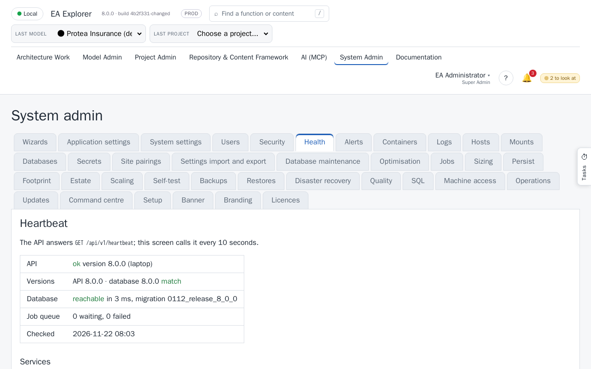

See the health of every part
For: System Admin
The API, the databases, sign-in, reports, documents and the rest.

#/admin/healthWhy do this
Health shows every part (API, databases, sign-in, reports, documents) in one place. Checking it first saves guessing when someone says something is wrong. See Running the installation.
The installation is built to look after itself as far as it can, and to ask before anything risky. These tasks are the decisions it leaves to you: what to run, when, and how far to trust a change.
In TOGAF terms: Outside the method: this keeps the tool that holds the Architecture Repository running. See EA Explorer and the TOGAF Standard.
The goal: You know whether EA Explorer is healthy.
Before you start You need the Super Admin or IT Admin role.
Steps
- Look at the dot in the top bar: green, amber or red.
- Open System Admin › Running › Health for every part.
- Open a red part for why.